Centros de Procesamiento de Datos (CPDs)
Temas de ENCO · 2/2
- 1. Formatos de Servidores - Racks y Blades
- 2. Centros de Procesamiento de Datos (CPDs)
2.1 Qué es un CPD
Un CPD (Centro de Procesamiento de Datos, data center) es una infraestructura centralizada de computación en la que se mantienen funcionando un gran número de servidores, dispositivos de almacenamiento y redes de interconexión, junto con los sistemas eléctricos y de climatización que los sostienen. En ellos se alojan servicios de cloud computing, Big Data e IA, HPC (computación de altas prestaciones), la infraestructura de Internet y telecomunicaciones (webs, aplicaciones, streaming), el sector financiero o el comercio electrónico.
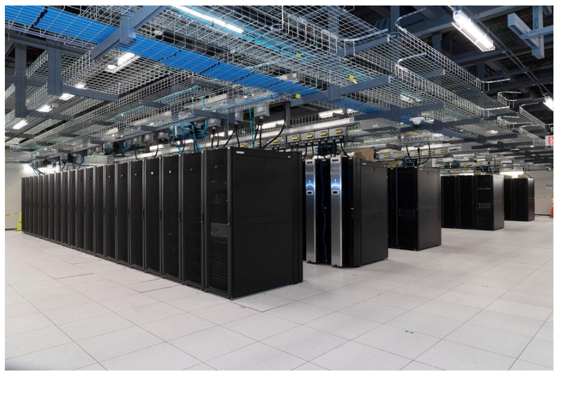
2.1.1 Ventajas
Concentrar los equipos en un CPD ahorra espacio físico gracias a la alta densidad de computación y permite una administración centralizada. Además evita duplicar componentes y servicios innecesariamente y aprovecha mejor los que hay. Sobre esa base se pueden montar servicios avanzados: agregar la potencia de cálculo o almacenamiento de muchas máquinas para aumentar las prestaciones, y dar servicio ininterrumpido gracias a la redundancia (duplicar componentes para que, si uno falla, otro lo sustituya).
2.1.2 Requisitos
Un CPD debe cumplir cuatro requisitos básicos: albergar de forma segura servidores, almacenamiento y equipos de red; ofrecer conectividad de red 24x7; suministrar potencia eléctrica a todo el equipo, y mantener un ambiente con temperatura y humedad controladas.
2.1.3 Diseño
Un CPD mediano o grande es una infraestructura compleja y cara, tanto al ponerla en marcha como al mantenerla. Por eso su diseño debe ser simple, ampliable, modular y flexible, y debe tener en cuenta el espacio físico, la potencia eléctrica, la climatización, la red, la gestión y la seguridad, entre otros aspectos. Esos son precisamente los apartados que siguen.
2.2 Espacio físico
El espacio de un CPD se reparte entre servidores, almacenamiento, equipos de red, HVAC y pasillos. Lo llamativo es que los pasillos, rampas, etc. ocupan casi la mitad de la sala, como se ve en el plano.
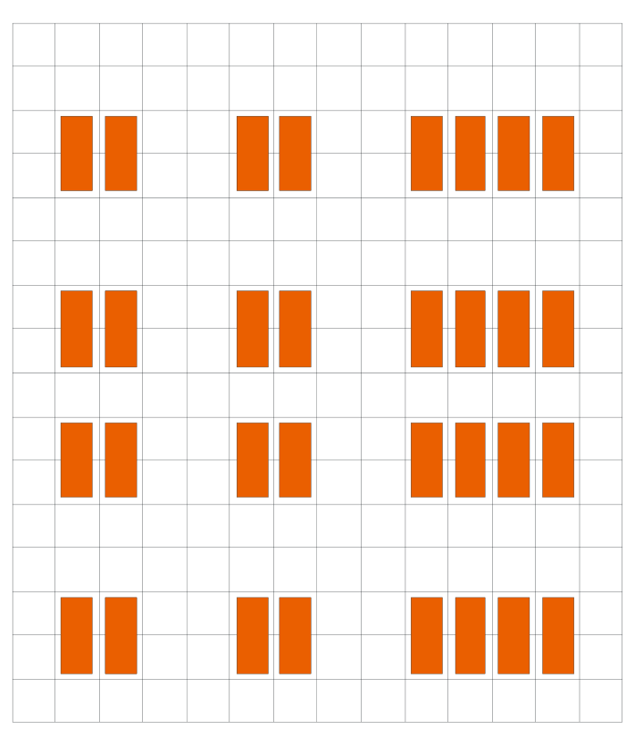
2.2.1 Suelo elevado
El suelo elevado es un falso suelo de baldosas apoyadas sobre soportes metálicos que deja un hueco de unos 60 cm sobre el suelo real. No todos los CPDs lo usan, porque resta altura a la sala y obliga a poner rampas. A cambio, por ese hueco pasan los cables y, sobre todo, el aire frío de la climatización. Como encima van los racks, debe soportar mucho peso: hay baldosas de aluminio de hasta 700 kg.
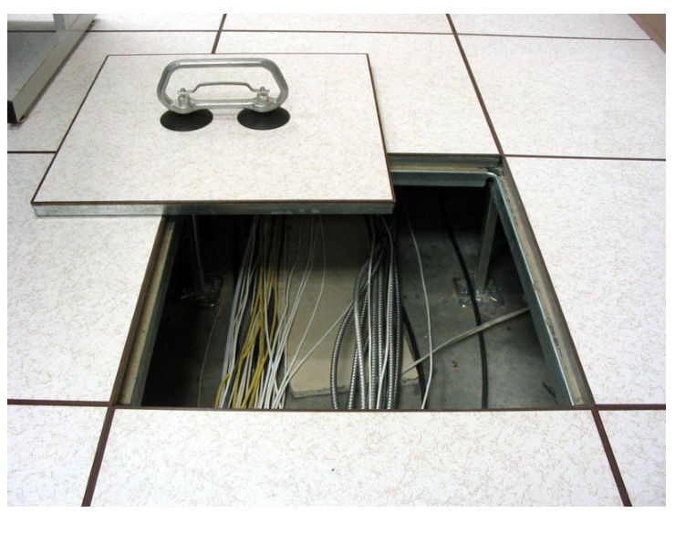
Para que la refrigeración funcione, el suelo no debe dejar escapar el aire frío, salvo por las baldosas perforadas que se colocan a propósito delante de los racks.
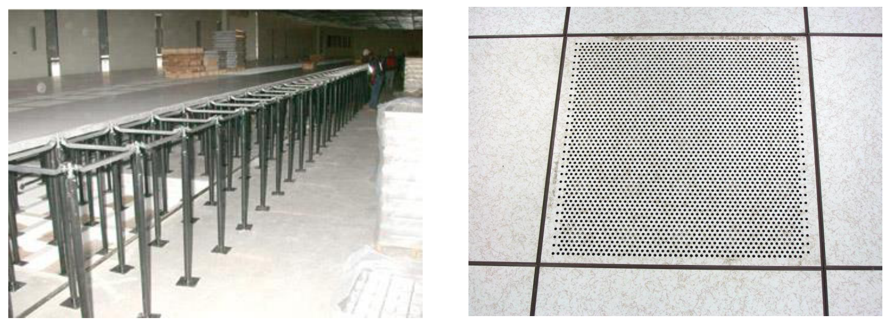
Los cables bajan al subsuelo por aberturas sin fugas de aire. Como puede haber cientos o miles, se organizan con códigos de colores, etiquetas, bridas y cestas.
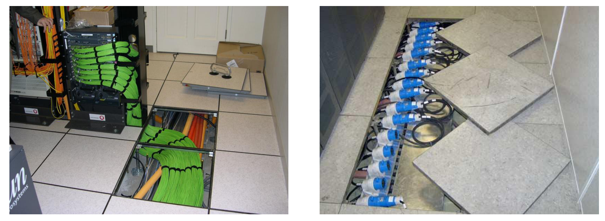
La corriente se reparte en cada rack mediante PDUs (Power Distribution Units), cajas de distribución eléctrica a las que, igual que a las cestas de cables, debe haber fácil acceso.
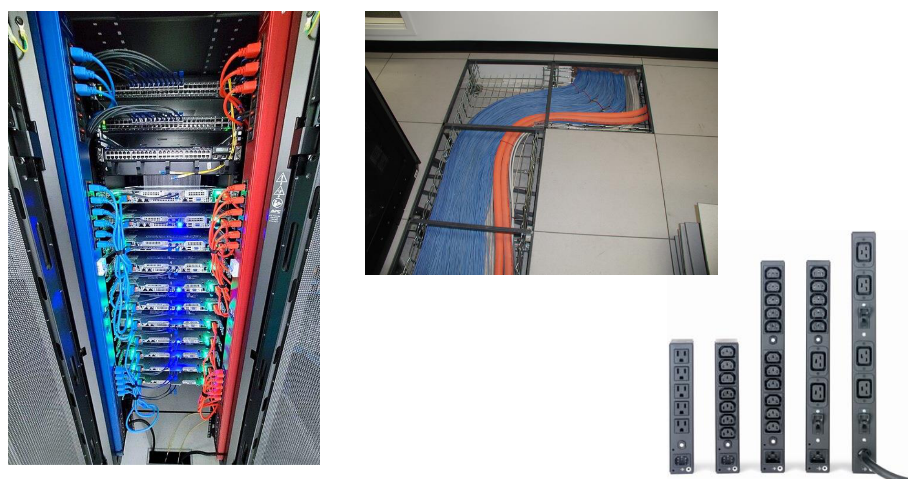
2.2.2 Sin suelo elevado
En los CPDs sin suelo elevado los cables se llevan por guías y bandejas suspendidas del techo.
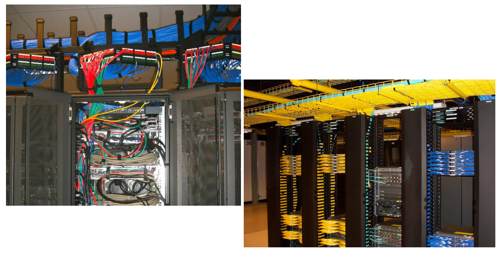
2.3 Potencia eléctrica
El sistema eléctrico de un CPD debe dar potencia suficiente, ser redundante y cumplir las normativas de seguridad. Siempre se dimensiona para más de lo que realmente se va a consumir, sumando el consumo del equipamiento informático, el de la climatización (HVAC), que ronda el 70% del anterior, y el de la iluminación y los sistemas de control y extinción. Los cables deben soportar toda esa potencia, pero los limitadores (interruptores automáticos) deberían saltar al 90% para cortar antes de llegar al límite.
2.3.1 Cifras de consumo
| CPD | Consumo |
|---|---|
| Laboratorio o pequeño | 1–12 kW |
| Medio | 12–200 kW |
| Grande | 200–10.000 kW |
| Súper CPD | > 10 MW |
Para hacerse una idea, la central térmica de As Pontes produce 1.400 MW y el embalse de Santa Uxía (Ézaro) 10 MW: un súper CPD consume tanto como produce una central hidroeléctrica pequeña.
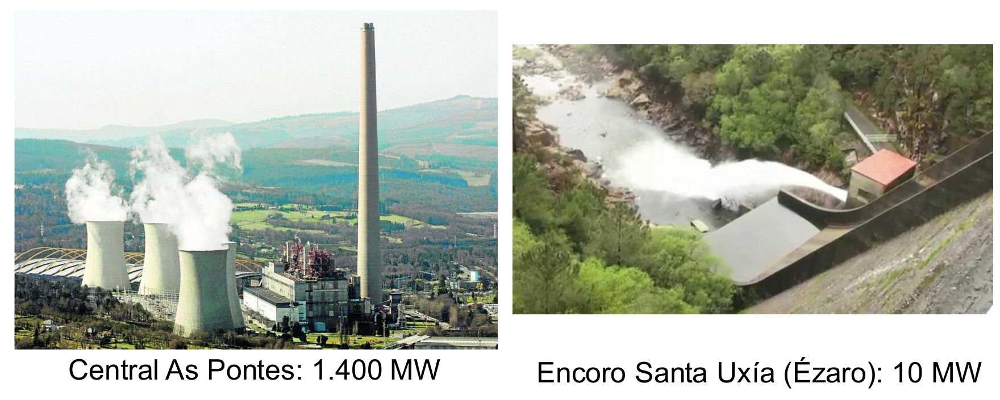
Como sustituir el cableado cuesta muchísimo, conviene instalar desde el principio cables de alta calidad capaces de soportar el amperaje que pueda hacer falta en el futuro. Los cortes de corriente son otro problema: se mitigan contratando más de un proveedor, pactando indemnizaciones y, sobre todo, teniendo siempre un SAI potente y un generador.
2.3.2 SAI (Sistema de Alimentación Ininterrumpida)
El SAI es un sistema de baterías cuya misión es dar corriente durante la transición hasta que arranca el generador, entre 15 segundos y 1 minuto. Debe poder alimentar absolutamente todos los elementos y dar hasta un 50% más en el arranque, cuando los equipos tienen un pico de consumo. Lo deseable es que además sea redundante y que elimine las deficiencias de la corriente, como los picos y los brown-outs (caídas temporales de tensión). Su punto débil es que las baterías son caras y necesitan mantenimiento.
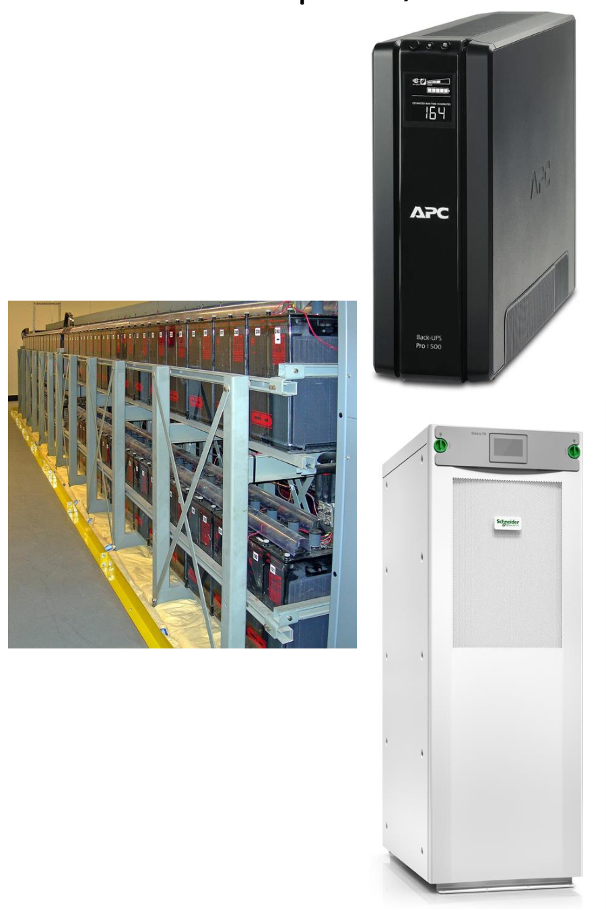
2.3.3 Generadores
Los generadores son motores diésel o turbinas de gas que toman el relevo al SAI en cortes largos. Son caros (un corte anual de 20 minutos no justifica el gasto), obligan a gestionar el suministro de combustible y tienen implicaciones medioambientales.
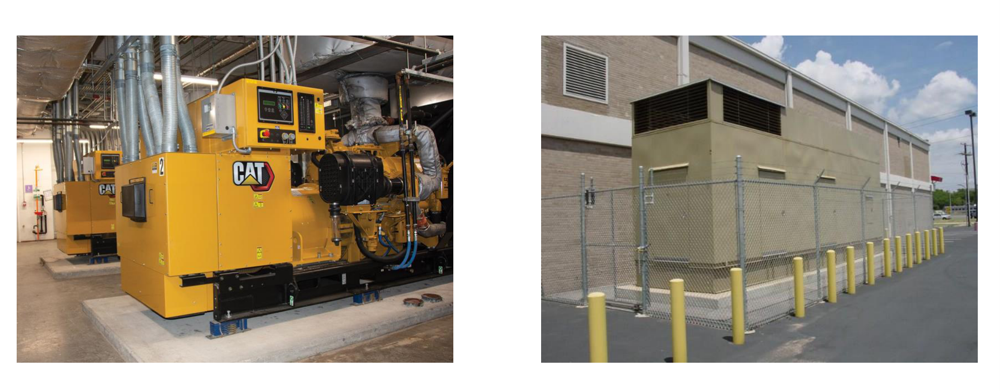
2.3.4 Fases de corriente
Al CPD llega corriente trifásica, que es la que necesitan los equipos de mayor consumo (SAI, climatización y algunos racks), mientras que los servidores y equipos TI suelen funcionar con monofásica. Por eso la instalación debe incluir cableado, limitadores, distribuidores y tomas de ambos tipos, y planificarse pensando en futuras expansiones, redundancia y eficiencia energética.
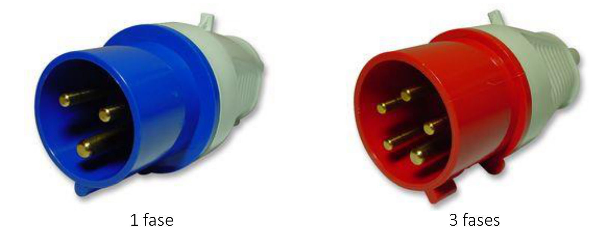
Para entenderlo mejor
Corriente monofásica y trifásica [Bien explicado] — qué diferencia hay entre una y otra y por qué los grandes consumos usan trifásica (vídeo, 4 min).
2.3.5 Electricidad estática
Una descarga electrostática puede dañar los componentes electrónicos, así que hay que evitar materiales que generen carga, poner esterillas antiestáticas en todos los accesos, usar baldosas con toma de tierra y que los trabajadores se descarguen antes de tocar los equipos.
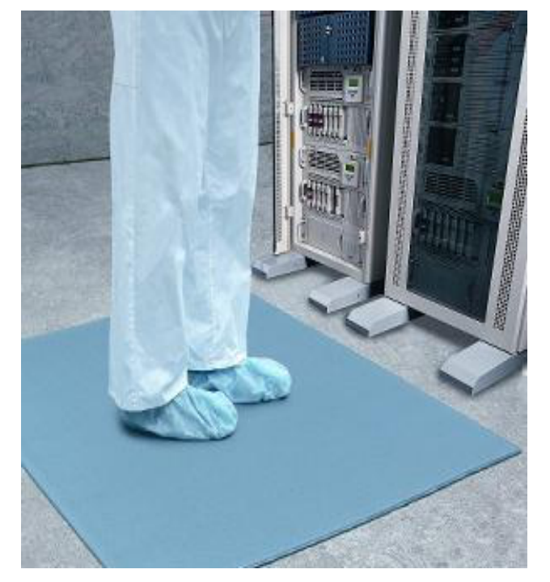
2.4 Climatización (HVAC)
HVAC (Heating, Ventilation & Air Conditioning) es el sistema que saca de la sala todo el calor que producen los equipos.
2.4.1 Condiciones y características
| Recomendado | Rango | |
|---|---|---|
| Temperatura | 21–23 °C | 10–32 °C |
| Humedad | 45–50% | 25–75% |
Mantener la temperatura es crítico, porque la fiabilidad cae un 50% por cada 10 °C por encima de 21 °C. La humedad también tiene un rango estrecho por dos motivos opuestos: el exceso de humedad corroe los equipos y el aire seco aumenta la electricidad estática.
Son instalaciones caras, que deben ser potentes y redundantes. Su potencia se mide en BTU/h (British Thermal Units por hora), donde 1 W = 3,41214 BTU/h y 1 BTU = 1055 J.
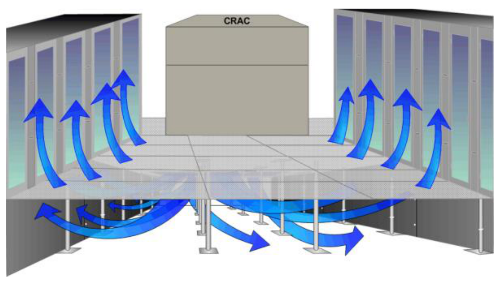
La unidad CRAC (aire acondicionado de sala) impulsa aire frío bajo el suelo, que sube por las baldosas perforadas hacia los racks.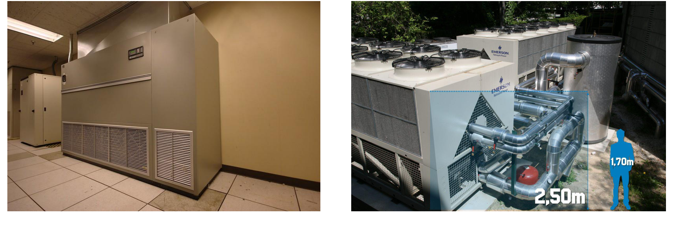
Los racks toman aire frío por delante y expulsan aire caliente por detrás. Cuando el aire frío sale del suelo, los servidores de la parte alta reciben aire ya parcialmente caliente, y el problema empeora cuanto más potencia disipa cada rack:
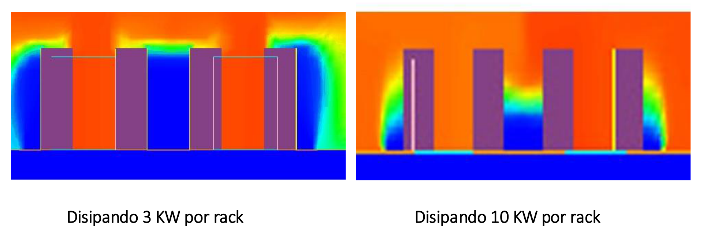
Azul = frío, rojo = caliente. Con 10 kW/rack el calor invade la parte alta de los racks.2.4.2 Necesidades crecientes
Las necesidades de climatización no dejan de crecer: los equipos generan muchísimo calor y los blades lo concentran aún más, los climas cálidos o húmedos aumentan la carga, y cualquier cambio en el CPD obliga a revisar el HVAC. Para hacerse una idea, en un CPD hay que renovar todo el aire cada minuto, cuando en una oficina basta con cada media hora. Además el sistema debe absorber imprevistos como puertas abiertas, baldosas levantadas por mantenimiento o fallos momentáneos de alguna de sus partes.
2.4.3 Eficiencia energética
El HVAC puede consumir entre el 40% y el 60% de la electricidad del CPD, así que es donde más se puede ahorrar. Algunos sistemas usan agua para enfriar el aire y, en climas secos, también para humidificarlo antes de inyectarlo. Por eso muchos grandes CPDs se construyen en regiones frías o con acceso a mucha agua; el caso extremo es Project Natick de Microsoft, un CPD sumergido en el mar.
Para entenderlo mejor
Project Natick (Microsoft Research) — página del proyecto de CPD sumergido en el mar, con fotos y vídeos (inglés; enlazado en las diapositivas).
En climas húmedos se usan sistemas de aire seco, que deshumidifican el aire entrante mediante agentes químicos. Son complejos, pero tienen la ventaja de limpiar el aire de contaminantes y bacterias mientras lo secan.
Para medir la eficiencia se usan dos métricas. El PUE (Power Usage Effectiveness), creado por la asociación Green Grid, divide la potencia total que entra al CPD entre la que consumen los equipos informáticos:
Su valor ideal es 1 (toda la energía va a los equipos); un PUE de 2 significa que por cada vatio útil se gasta otro en infraestructura. El DCIE (Data Center Infrastructure Efficiency) es simplemente el recíproco del PUE expresado en %, y es mejor cuanto más se acerca al 100% (PUE 2 → DCIE 50%).
Para entenderlo mejor
What is PUE? – Data Center Efficiency — cómo se calcula el PUE y qué significa cada valor (vídeo, 3:20, inglés).
Ligada a la eficiencia está la huella de carbono, es decir, los gases de efecto invernadero que genera el CPD. No es un tema menor: los CPDs consumen el 2% de la energía mundial y las TIC suponen ya el 3% de las emisiones globales.
2.4.4 Circulación del aire
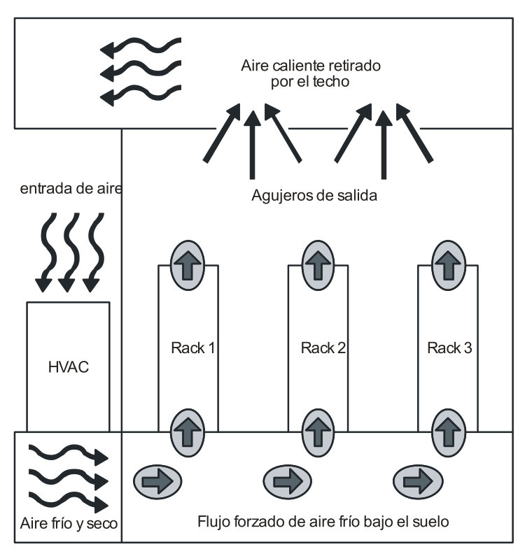
El flujo habitual consiste en introducir el aire frío por el subsuelo y retirar el caliente por el techo, aprovechando que el aire caliente sube de forma natural. Sin suelo elevado, el aire frío tiene que entrar también desde el techo, los dos flujos se mezclan y el sistema es menos eficiente.
La colocación de los racks debe guiarse por la ventilación: cada rack necesita su propia "área" de aire frío, y si ese espacio lo ocupa otro equipo, el rack no conseguirá mantener la temperatura.
2.4.5 Estrategias de enfriamiento de racks
Enfriar de abajo hacia arriba es la estrategia más eficiente, pero perjudica a los servidores de lo alto del rack, que reciben aire más templado y conviene dotar de mejores ventiladores. Sin suelo elevado ocurre justo lo contrario.
En cuanto a la colocación de las filas, hay dos opciones. Con pasillos fríos y calientes separados, las filas se enfrentan frontal con frontal, formando un pasillo frío con baldosas perforadas, y trasera con trasera, formando un pasillo caliente con baldosas sólidas; así el aire caliente nunca llega a la entrada de otro rack. Con pasillos mezclados, todas las filas miran en la misma dirección y cada una expulsa su aire caliente hacia el frontal de la siguiente, lo que es claramente peor.
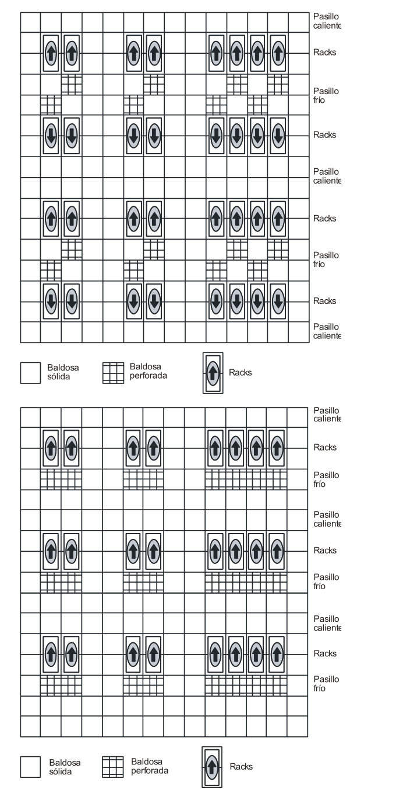
Para entenderlo mejor
Hot Aisle vs Cold Aisle Containment Explained — animación de cómo circula el aire en pasillos fríos y calientes y cómo se encierran (containment) para evitar mezclas (vídeo, 5:30, inglés; MEP Academy).
2.4.6 Buenas prácticas
Todo lo anterior se resume en una serie de buenas prácticas:
- Separar pasillos fríos y calientes y ajustar la perforación de las baldosas.
- Colocar los equipos más calientes abajo (donde llega el aire más frío) y los menos calientes arriba, y los racks más calientes en el centro de la fila.
- Dirigir el flujo de aire hacia arriba y completar con ventiladores si hace falta.
- Mantener los cables ordenados para que no bloqueen el aire.
- Rellenar los huecos de los racks con dummies (paneles ciegos), para que el aire caliente no vuelva al frente por ellos.
- No juntar todos los equipos problemáticos.
2.4.7 Distribución de temperatura y flujo del aire
Las simulaciones térmicas muestran cómo, al subir de 3 a 10 kW por rack, el calor invade la parte alta, y cómo añadir aire acondicionado sobre el rack o desde el techo corrige esas zonas calientes:
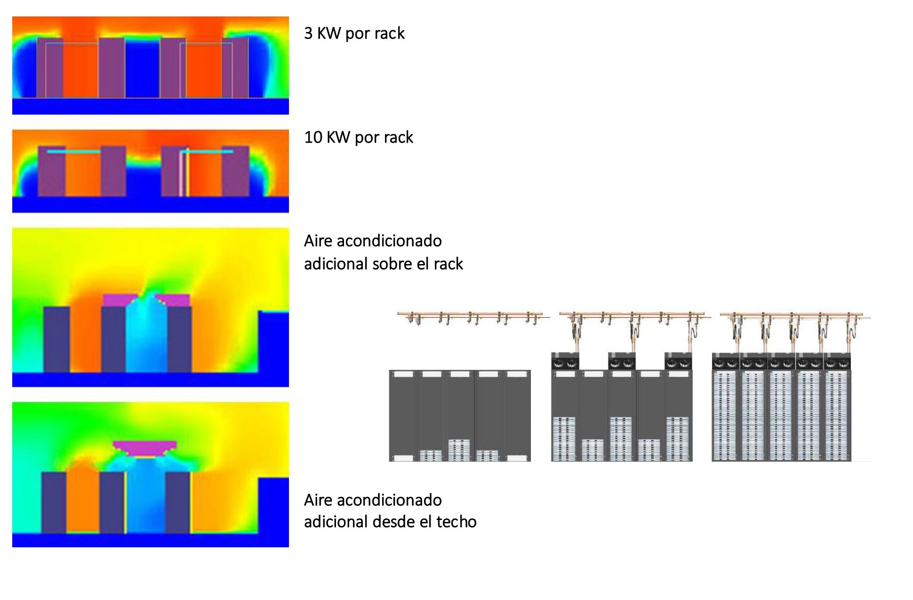
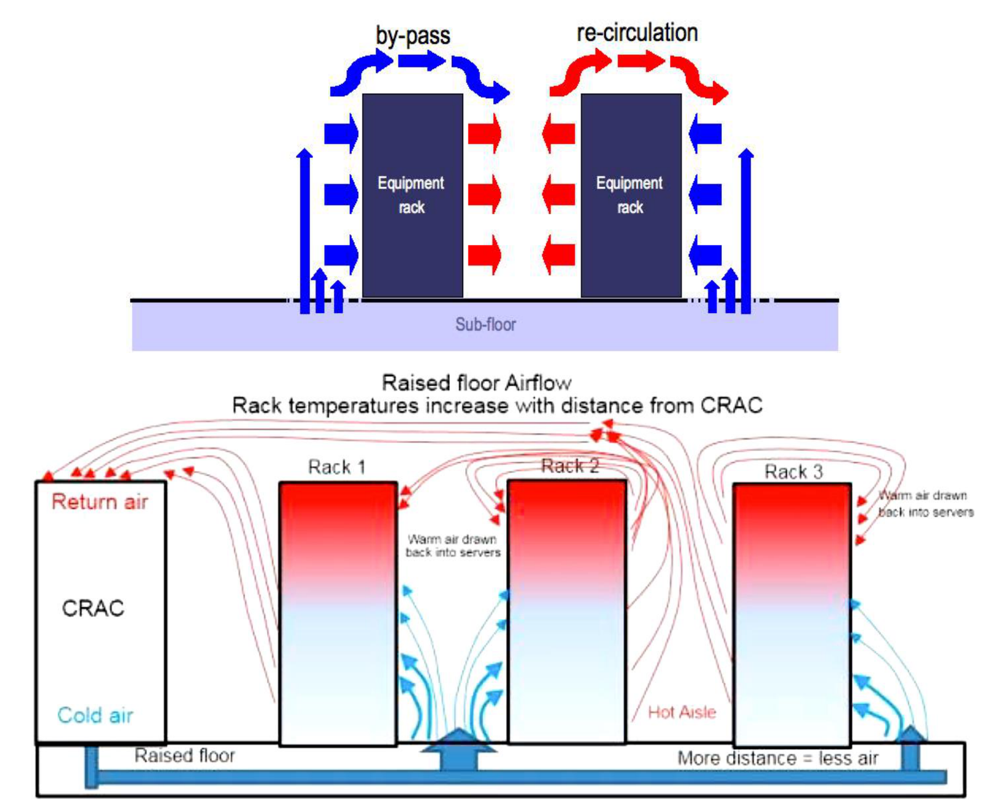
Hay dos defectos típicos del flujo. El by-pass ocurre cuando parte del aire frío pasa por encima del rack sin atravesarlo y se desperdicia; la re-circulación, cuando el aire caliente rodea el rack y vuelve a entrar por delante. Además, con suelo elevado, cuanto más lejos está un rack del CRAC, menos aire frío le llega y más se calienta.
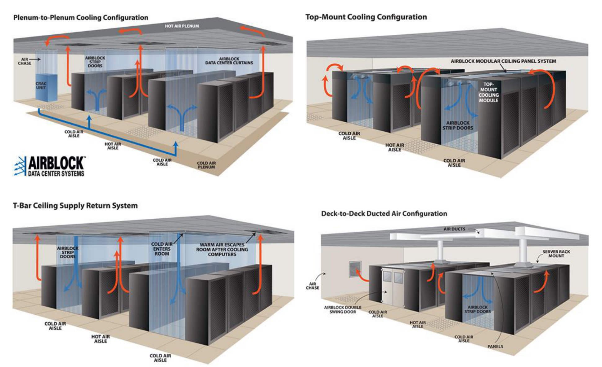
Formas de aislar pasillos: retorno por falso techo (plenum-to-plenum), refrigeración sobre el rack (top-mount), suministro desde el techo (T-bar ceiling) y conductos de techo a suelo (deck-to-deck).2.4.8 Otras técnicas
Cuando el aire no basta, se recurre a agua o refrigerante, a costa de más gasto y del riesgo de fugas. Como no todos los equipos calientan igual, también se puede crear una zona de alta densidad para los más calientes, refrigerada con un HVAC potente, y dejar un HVAC normal para el resto.
Otra fuente de calor es la conversión de corriente alterna a continua que hacen las fuentes de los servidores: se pueden sacar los conversores fuera del CPD y alimentar directamente en DC, aunque todavía no es una opción muy popular. Por último, empresas como Google y Microsoft desafían las especificaciones de los fabricantes: dejan subir la temperatura hasta 30 °C y aumentar la humedad, lo que ahorra mucha energía en HVAC a cambio del riesgo de perder la garantía.
2.5 Infraestructura de red
La red de un CPD es muy compleja, porque en realidad hay varias redes (LAN de datos, almacenamiento, administración...) y lo deseable es que todas sean redundantes. Un ejemplo sencillo con 50 servidores muestra hasta dónde crece el número de cables:
| Conexión | Cables |
|---|---|
| Cada servidor a 2 dispositivos de almacenamiento, redundante (50×2×2) | 200 |
| Dispositivos a la red de administración | 100 |
| Servidores a la red de administración | 50 |
| Servidores a la red de datos, redundante | 100 |
| Total | 450 |
Los cables de almacenamiento, además, pueden ser de fibra óptica.
2.5.1 Patch panels
El cableado debe ser modular. En instalaciones sencillas los cables van directos al switch, pero cuando la cosa se complica se usa un patch panel: un panel donde terminan los cables fijos que vienen de los equipos y desde el que se hacen conexiones cortas y fáciles de cambiar hacia los switches.
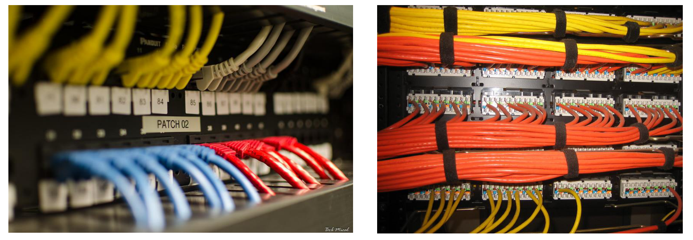
Para entenderlo mejor
What is a Patch Panel? — animación de para qué sirve un patch panel y cómo ordena el cableado (vídeo, 6:45, inglés; enlazado en las diapositivas).
2.5.2 Puntos de distribución (POD)
Un POD es un rack con switches, patch panels y Network Terminal Servers que da servicio a un grupo de racks. Su ventaja se ve con un ejemplo: si un CPD de 1000 racks se divide en 50 grupos de 20, cada uno con su POD, al añadir un rack o servidor nuevo solo hay que llevar el cable hasta su POD, no hasta la otra punta de la sala.
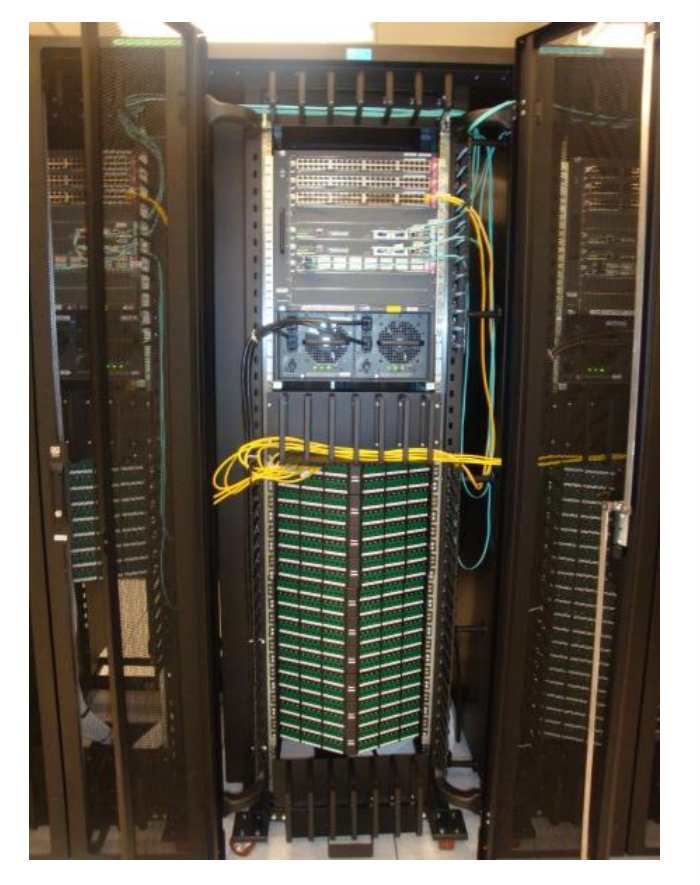
En los patch panels del POD todos los cables deben estar etiquetados y testados, para poder identificarlos luego en la sala de switches. El NTS (Network Terminal Server) resuelve el acceso de administración: cada servidor tiene un puerto de consola (serie o de red) que se cablea al NTS, el cual tiene un socket por servidor, de modo que desde el NTS se accede por consola a cualquier servidor. Por último, los sub-switches conectan los servidores a redes concretas (administración, backup...) y, desde el POD, enlazan con el switch maestro mediante una conexión de mayor ancho de banda.
2.5.3 Consideraciones
Conviene contratar más de un ISP fiable y comprobar la compatibilidad de los equipos. La redundancia, además, hay que hacerla bien: tener 3 líneas T1 (1,5 Mbps) y una T3 (45 Mbps) parece redundante, pero si falla la T3 se pierde más del 90% de la capacidad.
Hay que considerar el ancho de banda entrante y saliente, pero no merece la pena sobredimensionar pensando en el futuro, porque los precios bajan continuamente y es más barato ampliar después. Siempre que se pueda, se usan conexiones baratas (cobre Cat5 o fibra multimodo), reservando la fibra monomodo para la WAN, la red de almacenamiento y los servidores con gran demanda de red.
2.5.4 Gestión del cableado
Una buena gestión del cableado empieza por etiquetar cada cable en ambos extremos con un código alfanumérico sencillo y usar códigos de colores. Los cables deben estar ordenados (bridas para agrupar los similares, bandejas para que no cuelguen, sin sobrantes de varios centímetros y sin retorcerlos ni curvarlos en exceso) y verificados, usando las herramientas adecuadas para poner los conectores y un tester. Finalmente, el acceso al NTS debe ser seguro: si es por red, debe hacerse desde una red interna no accesible desde fuera ni desde la DMZ (la zona de la red expuesta a Internet).
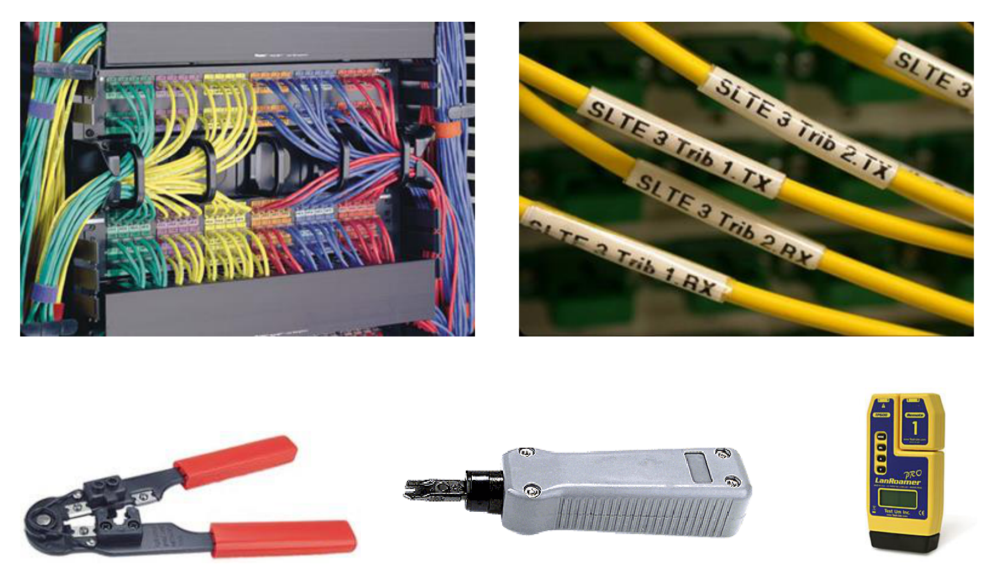
Abajo: crimpadora RJ45, insertadora y tester.Para entenderlo mejor
How to wire an RJ45 — cómo se pone un conector RJ45 con la crimpadora (vídeo, 6:30, inglés; enlazado en las diapositivas).
2.6 Protección contra incendios
En un CPD no se puede apagar un fuego con agua, porque provoca cortocircuitos y puede conducir la electricidad hacia personas u otros equipos. Si hay aspersores, no puede haber cables ni otros objetos a menos de medio metro de cada uno, para no reducir su eficacia. En instalaciones pequeñas basta con extintores; en las medianas y grandes se usan aspersores con productos químicos sin agua (CO₂, reductores de temperatura, desplazadores del oxígeno e inhibidores del fuego) y paredes y puertas a prueba de fuego.
| Extintor | Ventajas | Inconvenientes |
|---|---|---|
| CO₂ | Sin residuos | Choque térmico; desplaza el oxígeno |
| Polvo | Eficaz y evita que se reactive | Residuos dañinos |
| Halotron I / FE-36 | Sin residuos, no conducen, sin choque térmico | Caros |
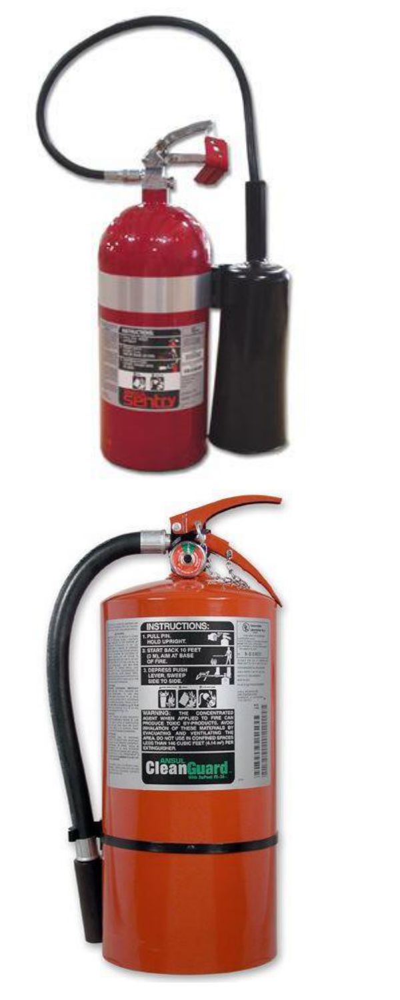
2.7 Gestión, seguridad y otros aspectos
2.7.1 Gestión y monitorización
En instalaciones medianas y grandes, la gestión se hace por red desde un Centro de Operaciones, de forma centralizada, con software que monitoriza servidores, almacenamiento, routers, SAIs, HVAC, etc. Normalmente se usa SNMP (protocolo de gestión de red), que permite comprobar el funcionamiento de los dispositivos (por ejemplo, la ocupación de los discos), modificar parámetros y recibir notificaciones. Toda esa información sirve para tomar decisiones de forma proactiva, en lugar de esperar a que algo falle.
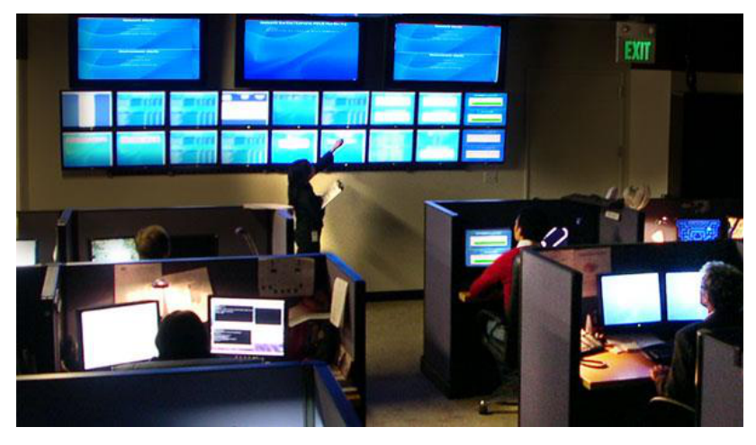
La monitorización necesita una red, y hay dos opciones: in-band, que usa la LAN existente, y out-of-band, que usa una red de datos separada y por tanto sigue funcionando aunque la principal falle.
2.7.2 Seguridad física
El acceso físico debe estar controlado con puertas cerradas, tarjetas de identificación y cámaras, y solo algunos empleados deben poder entrar. Aquí importa el tipo de CPD: en un co-location data center los servidores y su gestión corren a cargo de los clientes, que entran a manejar sus máquinas; en un managed hosting data center la gestión física y lógica la hace el propio CPD y nadie entra salvo sus gestores.
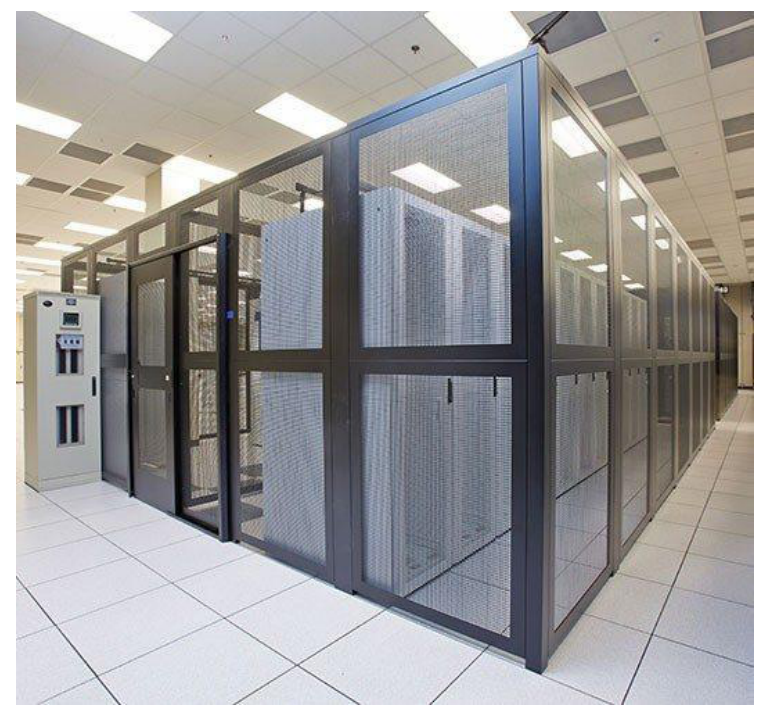
2.7.3 Localización geográfica
No siempre se puede elegir dónde construir, pero lo ideal es un lugar a salvo de peligros naturales (terremotos, inundaciones) y accidentales (incendios forestales, proximidad a aeropuertos o vías de tren, o a estaciones de telecomunicaciones, carreteras o tráfico pesado que transmitan vibraciones). También conviene evitar zonas contaminadas como industrias o granjas, porque afectan al HVAC. Además, debe haber personal técnico cualificado, electricidad barata y buenas conexiones a Internet, y el edificio necesita espacio suficiente tanto dentro (área y altura) como fuera (aparcamiento).
2.7.4 Limpieza
El CPD se limpia cada 3 o 6 meses, por personal cualificado y con materiales autorizados: de pH neutro, disipadores de electricidad estática, que no suelten pelusas, sin nada de metal y con aspiradoras con toma de tierra. Al limpiar el subsuelo o el techo hay que extremar el cuidado con los cables y no levantar varias baldosas a la vez, porque se altera el flujo de aire.
2.7.5 Otros elementos y costes
Un CPD necesita además iluminación, zona de carga y descarga, ventanas, apiladoras, cámaras de seguridad o lectores de tarjetas, y hay que planificar todos los gastos: infraestructura, funcionamiento y mantenimiento (limpieza y reparaciones).
2.7.6 Tendencia: CPD modular
La tendencia en los grandes CPDs son los CPDs modulares en contenedores, que ya vienen con racks, electricidad y refrigeración integrados y se van añadiendo según se necesita capacidad. Ejemplos son el Google Container Data Center y el ZTE Container Data Center.
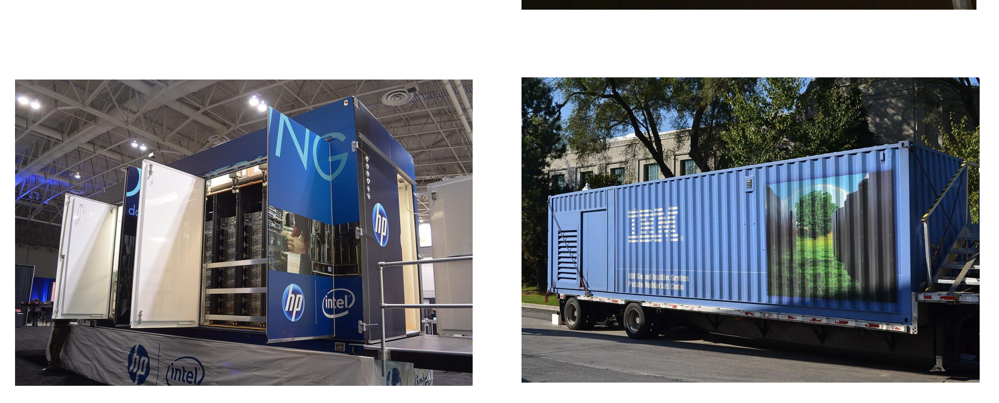
Para entenderlo mejor
Google container data center tour — visita a un CPD de Google hecho con contenedores (vídeo, 6:40, inglés; enlazado en las diapositivas junto a uno de ZTE).
2.8 Alta disponibilidad
2.8.1 Disponibilidad y costes
La disponibilidad es el porcentaje de tiempo que el sistema está funcionando. Diferencias que parecen mínimas en el porcentaje son enormes en tiempo de parada: cada "nueve" que se añade divide la parada entre 10.
| Funcionamiento | Parada | Parada/año | Parada/mes |
|---|---|---|---|
| 98% | 2% | 7,3 días | 14 h 36 min |
| 99% | 1% | 3,65 días | 7 h 18 min |
| 99,9% | 0,1% | 8 h 45 min | 43 min 45 s |
| 99,99% (4 nueves) | 0,01% | 52,5 min | 4 min 22 s |
| 99,999% (5 nueves) | 0,001% | 5,25 min | 26 s |
Y estar parado sale cada vez más caro, como muestra el coste por minuto de una interrupción no planificada (en dólares):
| 2010 | 2013 | 2016 | |
|---|---|---|---|
| Mínimo | 573 | 939 | 926 |
| Mediana | 5.188 | 6.828 | 7.003 |
| Media | 5.617 | 7.908 | 8.851 |
| Máximo | 11.080 | 16.246 | 17.244 |
En cuanto a las causas de las caídas (%), la primera es el fallo del SAI, el error humano se mantiene alrededor del 22–24%, y el cibercrimen se ha disparado del 2% al 22%:
| Causa | 2010 | 2013 | 2016 |
|---|---|---|---|
| Fallo del SAI | 29 | 24 | 25 |
| Cibercrimen (DDoS) | 2 | 18 | 22 |
| Error humano/accidental | 24 | 22 | 22 |
| Agua, calor o CRAC | 15 | 12 | 11 |
| Clima | 12 | 12 | 10 |
| Fallo del generador | 10 | 7 | 6 |
| Fallo del equipo IT | 5 | 4 | 4 |
| Otros | 2 | 0 | 0 |
2.8.2 Niveles (tiers)
Se llama capacidad N a la infraestructura justa para soportar todo el equipo que funciona en el CPD; es el nivel mínimo para el que se diseña. Si se añade un componente extra (N+1), el CPD puede seguir funcionando con normalidad aunque falle uno. Cada nivel de redundancia añade protección, pero también complejidad: más componentes suponen más coste y, paradójicamente, más probabilidad de que algo falle.
El tier clasifica la fiabilidad de un CPD en cuatro niveles:
| Tier | Nombre | Disponibilidad | Parada/año | Líneas de potencia y refrigeración | Redundancia |
|---|---|---|---|---|---|
| I | Básico | 99,671% | 28,8 h | Única | N |
| II | Componentes redundantes | 99,741% | 22 h | Única | N+1 |
| III | Mantenimiento simultáneo | 99,982% | 1,6 h | Múltiples, una activa | N+1 |
| IV | A prueba de fallos | 99,995% | 0,4 h | Múltiples | 2(N+1) |
Un Tier I puede tener suelo elevado, SAIs o generadores, pero necesita una parada completa al menos una vez al año para mantenimiento. El Tier II ya incluye suelo elevado, SAIs y generadores con componentes redundantes, por lo que es menos susceptible a interrupciones, planeadas o no. En el Tier III hay capacidad para que una línea soporte toda la carga mientras se mantiene la otra, así que el mantenimiento planificado no afecta al servicio, aunque un imprevisto sí puede provocar una parada. El Tier IV va más allá y resiste al menos un fallo no planificado sin afectar a la carga crítica.
Para entenderlo mejor
Explaining the Uptime Institute's Tier Classification System — explicación de los tiers por el Uptime Institute, la organización que los define y certifica (artículo, inglés). CertMike Explains Data Center Tiers — los cuatro tiers comparados en poco tiempo (vídeo, 4 min, inglés).
2.8.3 Conceptos
Conviene distinguir cuatro conceptos. La fiabilidad (reliability) es la probabilidad de que un componente funcione sin fallos durante un periodo. La robustez (resiliency) es su capacidad de seguir funcionando, aunque sea parcialmente, tras sufrir fallos; un ejemplo es la memoria ECC, que corrige errores de bits y sigue trabajando. La disponibilidad (availability) es la capacidad del sistema de mantenerse en funcionamiento. Y la capacidad de dar servicio (serviceability) es la probabilidad de completar un servicio en un tiempo determinado, por ejemplo, un 98% de probabilidad de completarlo en 3 horas.
2.8.4 Clústers
Un clúster de alta disponibilidad son varios servidores que se vigilan entre sí para que, si uno cae, otro asuma su trabajo sin que los clientes lo noten.
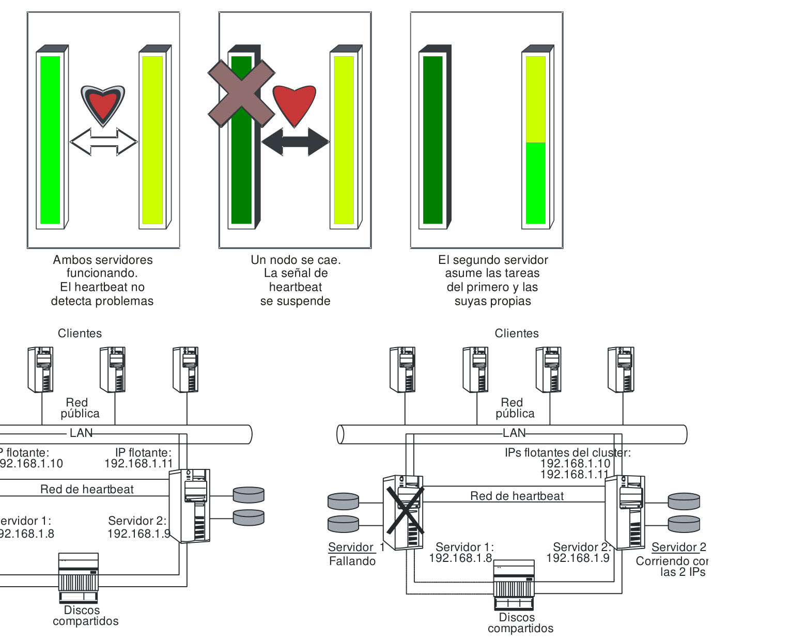
Mientras todo va bien, ambos servidores funcionan y se envían continuamente un heartbeat ("sigo vivo") por una red dedicada. Si un nodo cae, el heartbeat se interrumpe y el otro asume sus tareas además de las suyas. Para que el cambio sea invisible, cada servidor tiene su IP propia (192.168.1.8 y .9), pero los clientes se conectan a unas IPs flotantes (192.168.1.10 y .11) que pueden pasar de un servidor a otro, y ambos acceden a unos discos compartidos. Cuando falla el servidor 1, el 2 pasa a atender las dos IPs flotantes.
Existen además otros tipos de clúster. Los de alto rendimiento se usan para computación paralela, con nodos homogéneos (o incluso heterogéneos) unidos por una red de alta velocidad y programados normalmente con MPI. Los de balanceo de carga, también llamados granjas de servidores, reparten la carga entre los nodos de forma transparente al usuario y son típicos de los servicios web.
Para entenderlo mejor
High-availability cluster (Wikipedia) — heartbeat, failover y el problema del split-brain (los dos nodos creen que el otro ha caído) (artículo, inglés).
2.8.5 Métricas: MTBF y MTTR
El MTBF (Mean Time Between Failures) es el tiempo medio entre fallos, normalmente en horas, y no es la vida útil de un componente. Una pila puede durar 10 horas y tener un MTBF de 50.000 horas: significa que, de 50.000 pilas funcionando juntas, fallará una cada 10 horas. Por la misma razón, la redundancia no aumenta el MTBF de un componente; lo que mejora es el MTBF del sistema, aunque al haber más piezas aumenta la probabilidad de que haya algún fallo. El MTTR (Mean Time To Repair) es el tiempo medio de reparación. Con ambos se calcula la disponibilidad:
Es decir, la fracción del tiempo total en la que el sistema funciona; por ejemplo, con MTBF = 999 h y MTTR = 1 h, la disponibilidad es del 99,9%.
Para entenderlo mejor
Simple Guide to Failure Metrics (MTBF vs MTTR vs MTTF) — fórmulas con ejemplos numéricos y un vídeo de 3 min que compara las métricas (inglés).
2.8.6 Cómo aumentar la disponibilidad
Hay tres niveles de protección: proteger los datos con redundancia en los discos y backup; hacer clustering de servidores, para que la aplicación migre a otro servidor si el suyo falla, y, frente a catástrofes, tener un CPD gemelo en otro lugar (Disaster Recovery).
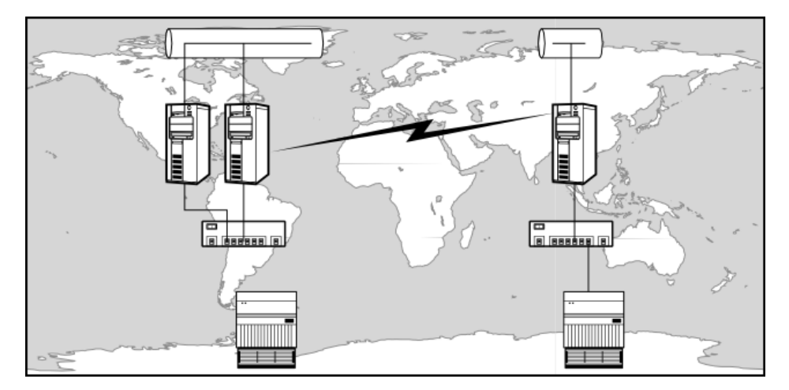
2.9 Lectura: huella hídrica de la IA
El artículo Making AI Less "Thirsty" (Li, Yang, Islam y Ren, Communications of the ACM, 2025) llama la atención sobre algo que casi nadie mide: se estudia la huella de carbono de la IA, pero no su huella hídrica, es decir, el agua dulce que gastan los CPDs para refrigerarse y las centrales que les dan electricidad.
2.9.1 El problema
Las cifras son grandes y crecen deprisa. Los CPDs propios de una sola empresa tecnológica extrajeron 29.000 millones de litros de agua y evaporaron más de 23.000 millones en 2023, casi un 80% potable, con subidas del ~20% (2021→22) y del ~17% (2022→23); otra tecnológica creció un ~34% y un ~22%. En EE. UU., el consumo de agua de los CPDs podría duplicarse o cuadruplicarse en 2028, hasta 150–280 mil millones de litros, y la IA es la carga que más rápido crece: podría consumir 85–134 TWh de electricidad en el mundo en 2027, y solo los servidores de IA de EE. UU., 150–300 TWh en 2028. En total, la IA mundial extraería 4.200–6.600 millones de m³ de agua en 2027 (más que 4–6 Dinamarcas o medio Reino Unido), de los que 380–600 millones de m³ se evaporarían.
Aun así, las fichas de los modelos (model cards) informan del carbono pero no del agua. Y ambas huellas no son sustituibles: reducir el carbono puede incluso empeorar el consumo de agua. La preocupación ya es oficial: Google y Microsoft se han comprometido a ser "Water Positive" en 2030, y la norma ISO/IEC sobre IA sostenible incluye el agua como métrica.
Para entenderlo mejor
La IA devora agua y energía: el costo ambiental de los centros de datos — reportaje breve sobre el consumo de agua y energía de los CPDs de IA (vídeo, 4:45, DW).
2.9.2 Conceptos
Hay que distinguir la extracción de agua, que es toda el agua tomada de ríos, lagos o acuíferos (e indica la competencia por el recurso), del consumo, que es la extracción menos lo que se devuelve, es decir, el agua evaporada o retirada del entorno (e indica la escasez que se provoca aguas abajo). Cuando se habla de huella hídrica sin más, se refiere a la de consumo.
Igual que con el carbono, el agua se clasifica en tres alcances:
| Alcance | Dónde se gasta el agua |
|---|---|
| Scope 1 | En el CPD: refrigeración |
| Scope 2 | En las centrales eléctricas que lo alimentan |
| Scope 3 | En la fabricación de chips y servidores |
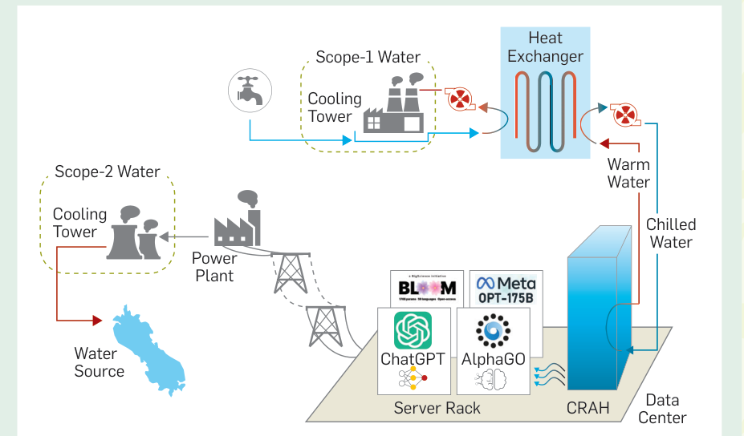
Scope 1: el CPD evapora agua en una torre de refrigeración que, mediante un intercambiador, enfría el agua que la unidad CRAH usa para enfriar los racks. Scope 2: la central eléctrica también evapora agua en su torre.2.9.3 Cómo gasta agua la IA
En el scope 1, el calor sale del CPD en dos etapas. Primero pasa del servidor a la instalación, por aire o por líquido (directo al chip o por inmersión), y esta etapa no evapora agua; los CPDs de IA suelen usar refrigeración líquida por su alta densidad. Después pasa de la instalación al exterior, y ahí es donde se gasta el agua.
La forma más habitual son las torres de refrigeración, que evaporan parte del agua para enfriar el resto. El agua que no se evapora solo puede reciclarse 3–10 veces, porque se acumulan sales y minerales, así que hay que reponer continuamente agua limpia, a menudo potable. Alrededor del 80% de lo extraído acaba evaporado, y el gasto va de 1 L/kWh (media de Google) a 9 L/kWh (un CPD en Arizona en verano). La alternativa es el aire exterior con ayuda de evaporación, que solo gasta agua cuando el aire está muy caliente (más de 85 °F ≈ 29 °C) o muy seco y consume ~70% de lo que extrae (Meta); de media es más eficiente que las torres, pero dispara el gasto en los días de calor. Los dry coolers no usan agua en el CPD, pero consumen más energía, con lo que el agua se gasta igualmente en la central eléctrica.
Para entenderlo mejor
What Is a Data Center Cooling Tower? — por qué evaporar agua enfría el resto y cómo circula el agua entre la torre y el CPD (artículo breve, inglés). Cooling tower. How it works?! Animation — animación del circuito de agua y la evaporación dentro de la torre (vídeo, 2:20, inglés).
En el scope 2, el agua la gastan las centrales termoeléctricas, que también necesitan refrigerarse. La media de EE. UU. es de 43,8 L/kWh de extracción y 3,1 L/kWh de consumo (Meta declaró 3,7 L/kWh en 2023). En el scope 3, la fabricación de chips requiere agua ultrapura y refrigeración, y el vertido puede ser tóxico; el reciclaje es bajo (en Singapur, un 45% en fábricas de obleas y un 27% en las de semiconductores), y en el caso de Apple la cadena de suministro supone el 99% de su huella hídrica.
Por último, la IA gasta sobre todo agua azul (de ríos, lagos y acuíferos, directamente utilizable por las personas y escasa), no agua verde (la almacenada en el suelo, típica de la agricultura).
2.9.4 Cómo se calcula
Los autores definen dos eficiencias hídricas en litros por kWh. El WUE in situ
donde
El agua externa se multiplica por el PUE porque la central genera toda la energía del CPD, no solo la de los servidores. El último término reparte el agua de fabricación
2.9.5 Caso GPT-3
Los autores lo aplican a GPT-3, suponiendo 1.287 MWh de entrenamiento y 0,004 kWh por petición de uso (una conversación de hasta 800 palabras de entrada y 150–300 de salida), con los datos de PUE y WUE que Microsoft publica para cada ubicación (✱ = CPD en construcción en 2023; WUE y EWIF en L/kWh):
| Ubicación | PUE | WUE in situ | EWIF | Agua entrenamiento (millones L) | mL/petición | Peticiones por 500 ml |
|---|---|---|---|---|---|---|
| Media EE. UU. | 1,17 | 0,55 | 3,142 | 5,439 | 16,9 | 29,6 |
| Arizona | 1,18 | 1,63 | 4,959 | 9,629 | 29,9 | 16,7 |
| Georgia✱ | 1,12 | 0,06 | 2,309 | 3,406 | 10,6 | 47,2 |
| Illinois | 1,35 | 0,74 | 2,233 | 4,833 | 15,0 | 33,3 |
| Iowa | 1,16 | 0,14 | 3,104 | 4,814 | 15,0 | 33,4 |
| Texas | 1,28 | 0,25 | 1,287 | 2,442 | 7,6 | 65,9 |
| Virginia | 1,14 | 0,14 | 2,385 | 3,679 | 11,4 | 43,7 |
| Washington | 1,15 | 0,95 | 9,501 | 15,285 | 47,5 | 10,5 |
| Wyoming | 1,11 | 0,13 | 2,574 | 3,845 | 11,9 | 41,8 |
| Australia✱ | 1,12 | 0,012 | 4,259 | 6,154 | 19,1 | 26,1 |
| Dinamarca✱ | 1,16 | 0,01 | 3,180 | 4,760 | 14,8 | 33,8 |
| Finlandia✱ | 1,12 | 0,01 | 4,542 | 6,561 | 20,4 | 24,5 |
| India✱ | 1,43 | 0,00 | 3,445 | 6,340 | 19,7 | 25,4 |
| Indonesia✱ | 1,32 | 1,90 | 2,271 | 6,304 | 19,6 | 25,5 |
| Irlanda | 1,19 | 0,02 | 1,476 | 2,287 | 7,1 | 70,4 |
| México✱ | 1,12 | 0,056 | 5,300 | 7,711 | 24,0 | 20,9 |
| Países Bajos | 1,14 | 0,06 | 3,445 | 5,131 | 15,9 | 31,4 |
| Suecia | 1,16 | 0,09 | 6,019 | 9,101 | 28,3 | 17,7 |
El resultado es que entrenar GPT-3 en EE. UU. consume unos 5,4 millones de litros (de ellos 0,7 millones en el propio CPD) y que el modelo "se bebe" medio litro cada 10–50 respuestas, según dónde se ejecute. Dos conclusiones saltan a la vista: el agua de scope 2 domina casi siempre, y la ubicación lo cambia todo (entrenar en Washington gasta casi siete veces más que en Irlanda).
Además, la estimación es conservadora. En sistemas reales (Nvidia DGX H100), un modelo de tamaño similar como Falcon-180B gasta ~0,016 kWh por petición, cuatro veces lo supuesto; Microsoft tiene de los WUE más bajos del sector; el EWIF usado para EE. UU. (3,14) es menor que el de otro informe reciente (4,35), y modelos posteriores como GPT-4, sobre todo en modo razonamiento, gastan más. El agua por petición puede bajar con modelos más eficientes, pero el consumo total seguirá creciendo con la demanda.
2.9.6 Recomendaciones
Los autores piden, en primer lugar, más transparencia: publicar el agua en las model cards y en los paneles de la nube, incluyendo el scope 2, e investigar el scope 3, del que apenas hay datos.
En segundo lugar, destacan que "cuándo" y "dónde" importan: como la eficiencia hídrica varía con el tiempo atmosférico y con la mezcla eléctrica, se puede programar el entrenamiento, por ejemplo, de noche y en el CPD más eficiente, e incluso informar a los usuarios para que usen la IA en las horas más eficientes.
Por último, señalan un conflicto: para reducir carbono conviene "seguir al sol" (ejecutar cuando hay más energía solar), pero para reducir agua conviene "no seguir al sol" (evitar las horas de más calor). Hay que buscar un equilibrio entre ambas huellas.
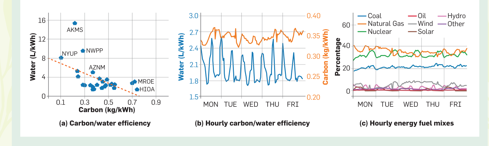
(a) Regiones eléctricas de EE. UU.: menos carbono no implica menos agua. (b) Virginia hora a hora: agua y carbono apenas se correlacionan (Pearson 0,06). (c) Mezcla de fuentes de Virginia (gas y nuclear 30–40%, carbón ~20%, resto renovables y otras), que explica esas variaciones.2.10 Ideas clave
- CPD: infraestructura centralizada. Requisitos: seguridad, red 24x7, energía, clima controlado. Diseño simple, ampliable, modular y flexible.
- Espacio: pasillos ≈ mitad. Suelo elevado ~60 cm (cables y aire frío; baldosas hasta 700 kg; perforadas solo donde debe salir el aire).
- Electricidad: IT + HVAC (70% de IT) + resto; limitadores al 90%; SAI (15 s–1 min, +50% al arrancar) + generador; trifásica para grandes consumos.
- HVAC: 21–23 °C, 45–50% humedad; −50% fiabilidad cada 10 °C sobre 21 °C; 40–60% del consumo; aire renovado cada minuto; pasillos fríos/calientes separados; evitar by-pass y recirculación.
- PUE = total/IT (ideal 1); DCIE = 1/PUE en %.
- Red: patch panels, PODs (switches, patch panels, NTS), redundancia real, etiquetar y probar.
- Fuego: sin agua; químicos; extintores CO₂ / polvo / Halotron-FE-36.
- Gestión: SNMP; in-band vs out-of-band. Co-location vs managed hosting.
- Tiers: I (N, 28,8 h/año) · II (N+1, 22 h) · III (N+1, varias líneas, 1,6 h) · IV (2(N+1), 0,4 h).
- Disponibilidad = MTBF / (MTBF + MTTR). Clúster HA con heartbeat e IPs flotantes. Disaster Recovery.
- Agua de la IA: scope 1 (refrigeración), 2 (electricidad, el mayor), 3 (fabricación). GPT-3: ~5,4 millones de L para entrenarse, 500 ml cada 10–50 respuestas. Agua y carbono no van alineados: elegir cuándo y dónde ejecutar.